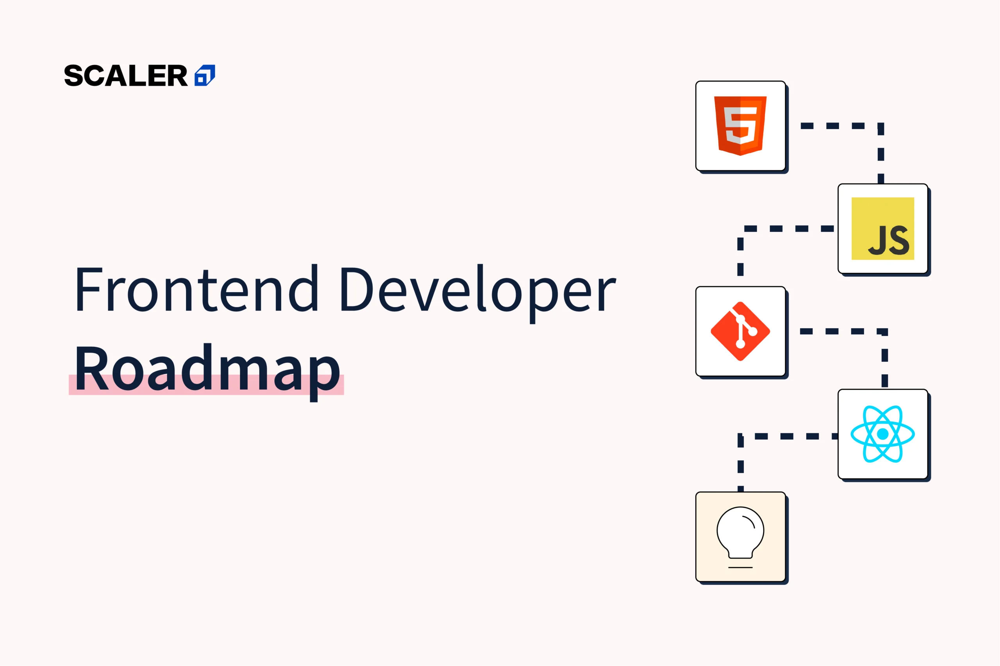

My Work

Front-End
Focuses on the visual and interactive part of of a website or web application that users see and interact with. It involves using languages like HTML,CSS,JavaScript,to build user interfaces.developers ensure websites are responsive.

correcting
Refers to the process of identyfying and fixing bugs or errors in the code.This is crucial part of the software development cycle,often done during debugging or after testing. correcting ensures that the software runs smoothly.

Back-End
Refers to the server-side of a web application. It invlves building and managing the logic,database interaction,and APIs that power the front-end. developers ensure that data is processed correctly and that the application function smoothly behind the scenes.